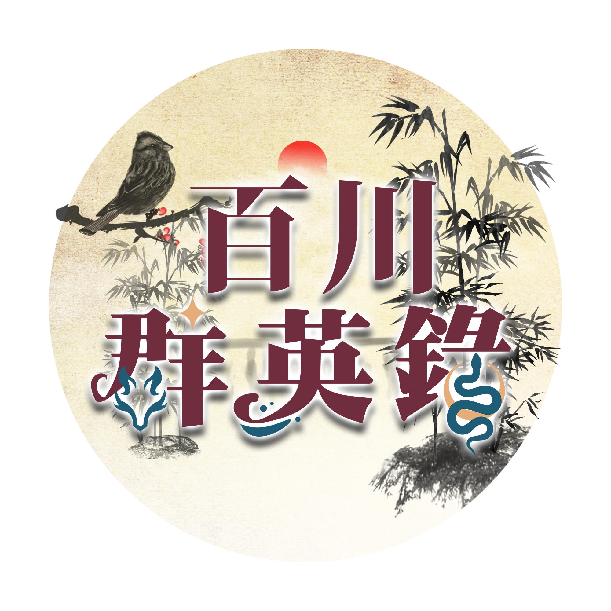

百川群英錄
🌙
基礎世界觀
基本原則
世界歷史
御神珠
陰陽
修仙基本知識
靈氣
靈根
靈力
益處
人修
獸修
妖修
世界地理
世界氣候
皇城
梁國歷史
地區風氣
百川律典
千訣宗
千訣歷史
千訣宗門風氣
千訣組織
執靈圖
玄靈宗
玄靈歷史
玄陽vs玄陰
玄靈組織
灼草經
衍天宗
衍天歷史
衍天風氣
衍天組織
符海錄
云嵐宗
云嵐歷史
云嵐風氣
云嵐組織
百器書
御清宗
世界產物
執靈圖
灼草經
符海錄
百器書
菜譜
萬邪塚
凡山戲
金玉言
靈草經
歡迎
歡迎來到百川群英錄超級簡單入門網站！
本網站旨在於讓未接觸過群英錄的大家能快速知道整個世界的架構。
具體玩法請根據下方連結前往官方網站或官方Discord！
裡面會有專人跟許多前輩玩家替您解惑！
README
下次不要再出現
我知道了